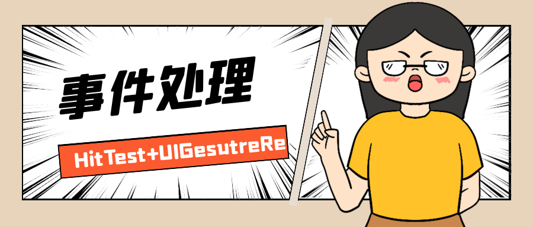

用户触摸事件和手势处理是iOS开发的一大知识点，比如按钮点击、UIScrollView及其子类的拖拽滚动，虽然这个知识点非常重要，但是由于UIKit已经做了很完善的封装，开发者能够对它深入了解的机会并不多。本人最近在项目的需求开发过程中遇到了这样一个场景，在这里把用到的知识点分享给大家，希望当你遇到类似场景的时候这篇文章能提供一些帮助。
本文主要涉及的内容包括：
- 场景重现，其他更日常的方法为什么不能解决问题。
- 使用
hitTest:withEvent:实现穿过上层ScrollView - 通过传递ScrollView的panGestureRecognizer重新使ScrollView可以滚动
让我们开始吧🛎 用户触摸事件和手势处理是iOS开发的一大知识点，比如按钮点击、UIScrollView及其子类的拖拽滚动，虽然这个知识点非常重要，但是由于UIKit已经做了很完善的封装，开发者能够对它深入了解的机会并不多。本人最近在项目的需求开发过程中遇到了这样一个场景，在这里把用到的知识点分享给大家，希望当你遇到类似场景的时候这篇文章能提供一些帮助。
本文主要涉及的内容包括：
- 场景重现，其他更日常的方法为什么不能解决问题。
- 使用
hitTest:withEvent:实现穿过上层ScrollView - 通过传递ScrollView的panGestureRecognizer重新使ScrollView可以滚动
让我们开始吧🛎
到公众号【iOS开发栈】学习更多SwiftUI、iOS开发相关内容。

业务场景重现
在App的一个页面中，上半部分是一个
UICollectionView（下面统称为A），它可以横向滚动，并且它是固定的；还有一个UIScrollView（下面统称为B）是可以竖向滚动的，并且在整个界面中任何一个点都可以滚动，默认情况下B只在页面的下半部分显示内容，当它向上滚动时会覆盖住下面的UICollectionView。
拿到这个需求后，我想过下面这些方法：
- 使用带header的
UITableView或者UICollectionView并不行，因为A是固定在页面上半部分而且是会被B覆盖的。❌ - 默认情况下把B放在A的下面并且B为透明色，当B向上滚动时再把A放到B的下面。这种方法可以使A在默认情况下支持滚动，并且可以让B一直可以滚动。但是当B向上滚动时，A就不能滚动了。❌
- B放在A上面，并且B的大小是全屏，但是内容是从A的下边缘开始。这时B的上下滚动是没有问题，不过A无法滚动。如果设置B的
userInteractionEnabled为NO，那么A就可以滚动了，但是B却不能响应手势了。
此时，有一个想法出现：是不是可以做到A响应页面上半部分的手势，B响应下半部分的触摸呢？其实是可以的，通过自定义一个CustomScrollView并重写hitTest:withEvent:方法，这里需要注意的是随着B向上滚动可以穿透的区域是逐渐缩小的。这样做页面下半部分的B区域是没有问题的，当横向滑动页面上半部分的A区域时，A也能横向滚动；当在上半部分纵向滑动时可以通过监测滚动距离来设置contentOffset来使B滚动，不过要模仿UIScrollView的bounces就比较困难了（[SwipeTableView](https://github.com/Roylee-ML/SwipeTableView)模仿的不错）。
这种方法应该是基本可以实现效果，但是作为一个程序员，本着精(neng)益(sheng)求(ze)精(sheng)的精神，我认为这种方法太笨重了，不利于以后需求的变更。所以，我又冥思苦想🤔🤔🤔了10分钟，总感觉可以通过手势来解决这个问题。
🤔🤔🤔
🤔🤔🤔
🤔🤔🤔
🙇♂️功夫不负有心人🙇♂️，我想到了之前看过的一个WWDC视频讲到了iPhone的主界面下拉搜索功能的实现方法，貌似跟这个需求很相似。
但是你要是问我这个视频的链接，那我很不好意思，我找了好久都没有找到。如果你找到了麻烦告诉我，万分感谢。
hitTest:withEvent:
从以上的分析中有一点是可以肯定的，那就是A必须在B的下面，并且为了能够让A可以滚动，就必须能够穿过B。不过这里需要注意⚠️，B上面可能会有其他子视图需要能够触发事件（比如有一个UIButton），所以B不能被完全穿透。
而为了达到这个效果，需要创建UIScrollView的子类并且B是这个子类的实例。代码大概是这样：
// CustomScrollView.h
#import <UIKit/UIKit.h>
NS_ASSUME_NONNULL_BEGIN
@interface CustomScrollView : UIScrollView
@end
// CustomScrollView.m
#import "CustomScrollView.h"
@implementation CustomScrollView
- (UIView *)hitTest:(CGPoint)point withEvent:(UIEvent *)event {
UIView *hitView = [super hitTest:point withEvent:event];
for (UIView *sub in self.subviews) {
if (CGRectContainsPoint(sub.frame, point)) {
return hitView;
}
}
return nil;
}
@end
其中，在hitTest:withEvent:方法中的for循环就是为了让这个ScrollView的子类可以正常响应事件。而最终通过return nil就让除了ScrollView子类所在范围之外的区域都会被穿透。
但是这样做以后，由于B的上半部分是空白的，那竖向滑动这半部分B就无法正常滚动了。
传递panGestureRecognizer
UIScrollView之所以能够响应很多触摸事件是因为它内部有很多手势——UIGestureRecognizer，通过打印gestureRecognizers可以看到这些手势。其中有一个是UIPanGestureRecognizer就是用来处理拖动的，而UIScrollView类也提供了获取这个手势的属性panGestureRecognizer。
(
"<UIScrollViewDelayedTouchesBeganGestureRecognizer: 0x7f7aec00b200; state = Possible; delaysTouchesBegan = YES; view = <CustomScrollView 0x7f7aeb813c00>; target= <(action=delayed:, target=<CustomScrollView 0x7f7aeb813c00>)>>",
"<UIScrollViewPanGestureRecognizer: 0x7f7aec01c6e0; state = Possible; delaysTouchesEnded = NO; view = <CustomScrollView 0x7f7aeb813c00>; target= <(action=handlePan:, target=<CustomScrollView 0x7f7aeb813c00>)>>",
"<UIScrollViewKnobLongPressGestureRecognizer: 0x7f7aec02bd50; state = Possible; view = <CustomScrollView 0x7f7aeb813c00>; target= <(action=_handleKnobLongPressGesture:, target=<CustomScrollView 0x7f7aeb813c00>)>; numberOfTapsRequired = 0; minimumPressDuration = 0.1>",
"<UIScrollViewKnobLongPressGestureRecognizer: 0x7f7aec02ea70; state = Possible; view = <CustomScrollView 0x7f7aeb813c00>; target= <(action=_handleKnobLongPressGesture:, target=<CustomScrollView 0x7f7aeb813c00>)>; numberOfTapsRequired = 0>",
"<UIHoverGestureRecognizer: 0x7f7aec00f930; state = Possible; view = <CustomScrollView 0x7f7aeb813c00>; target= <(action=_handleKnobHoverGesture:, target=<CustomScrollView 0x7f7aeb813c00>)>>",
"<_UIDragAutoScrollGestureRecognizer: 0x60000295d700; state = Possible; cancelsTouchesInView = NO; delaysTouchesEnded = NO; view = <CustomScrollView 0x7f7aeb813c00>; target= <(action=_handleAutoScroll:, target=<CustomScrollView 0x7f7aeb813c00>)>>"
)
UIGestureRecognizer有两个属性是view和target，view表示响应手势的视图，target确定了处理事件的对象。从上面的log可以看出ScrollView的滑动手势的view和target都是CustomScrollView。
而此时把这个ScrollView的panGestureRecognizer添加到它的父视图上，就可以让父视图来响应手势，但是target还是ScrollView，也就是说这时候滑动ScrollView的父视图是可以让实现ScrollView的滑动效果的。
至此，A的横向滚动、B的全屏幕纵向滚动以及B子视图的事件处理都得到完美实现。🎉🎉🎉
到公众号【iOS开发栈】学习更多SwiftUI、iOS开发相关内容。
总结
通过完成这一个需求，让我对iOS的事件处理有了深刻的理解，并对UIGestureRecognizer也有了更深入的了解。这一切的起源都是对精益求精的追求。
回头想想，当时看那个WWDC的视频的时候还不知道在哪里能用上，以至于到后来都忘记了具体的做法，但是解决类似问题的思路却是实打实的留在了脑海了。真的是“今天学到的知识，不一定哪天就用到了”。